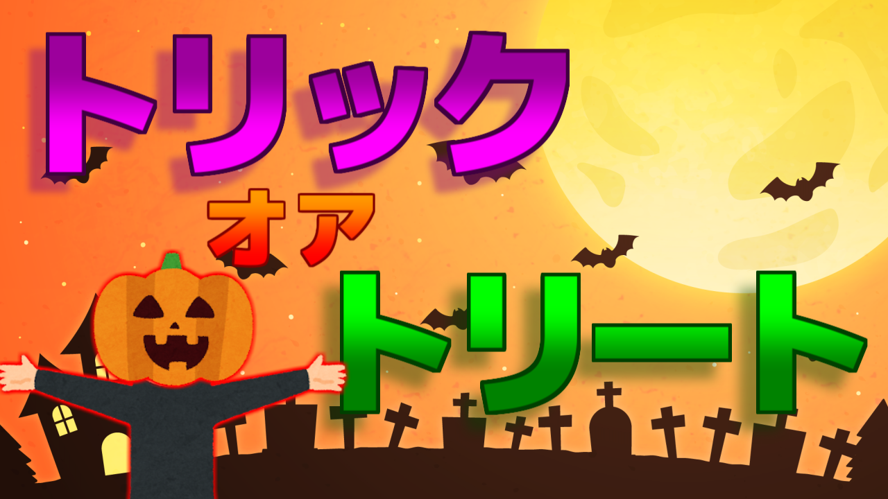

サムネはインパクト！2022/10/30
ハピハロ!
ハッピーハロウィン！はちみつです。
今年もこの野蛮な季節がやって来てしまいました。
まぁ正直に言えばハロウィンは毎年特に何もしてないので特に何も思わないんですが...
しかしイチ動画投稿者として、こういった行事に何か企画をして動画を出す事は大事だと思います。
そして動画投稿をする上で大事な要素が幾つかあります。
そう！サムネイル！！
僕はサムネイルというのはいわば動画コンテンツの「顔」だと思っています。
視聴者が適当にスラスラーっと見ている画面上で如何に「一瞬で興味を引く」サムネイルを出せるかというのはかなり大事だと思ってます。
そしてそのためには「インパクトと分かりやすさ」が大事だと思ってます。
インパクトって?
下の画像を見てみてください。
まぁ普通とか、たまに見るな～みたいなサムネですよね。
でもなんだかこれがショボく感じる人、いませんか?
さっきも言った通り、適当にスラスラ進めている画面上で流れていくサムネイルが表示される時間って、一瞬じゃないですか。
このサムネはまだ文字がデカいのでまぁまぁインパクトはありますが、中学校の生徒が作ったポスターようなショボさがありませんか?(ただの例えなので別に全部の中学校がそうって訳じゃないよ)
それじゃあ次、

こっちはさっきの画像の文字のフォントを変更したのと、新しくグラデーションと影を追加しました。
こうすると一気にそれっぽいサムネイルになった気がしませんか?
最初のサムネのフォントはＭＳ ゴシック、このサムネのフォントはMplusフォントの2cの太さがblackです。
このフォントはシンプルで太さも丁度いいのでよく使ってます。
フォントの太さを太くするだけでも、サムネイルのインパクトはめちゃくちゃ大きくなります。
分かりやすさって?
もう一つ大事なのは、「分かりやすさ」です。
殆どの人は画像に文字が沢山あると読むのがめんどくさくなって、スルーしちゃうと思います。
皆さんが取扱説明書とか利用規約を読まないのと同じですね。
それに加えて一瞬で流れて行ってしまうサムネは尚更多数の文字を読まないことが多いと思います。
更に、画像に入る文字が多い＝文字が小さくなるという事なので、インパクトに欠けてしまいます。
これは自分の昔の動画のサムネイルですが、
文字の情報量が多いですよね。
そして最近の動画のサムネイルがコレです。
出来るだけ画像に入る文字数を減らしています。
端末にもよりますが、画面に表示されるサムネのサイズは
こんなもんだと思います。
こうすると文字が小さいとなんて書いてあるかすぐには分かりませんよね。
サムネイルを作る時は、今作っている画像がこの小さいサイズで表示されるという事を頭に入れておいた方がいいですね。
最後に
今回はサムネイルについて話しました。
何回か言ってる気がしますが、最近僕の周りにも動画投稿をしてる人がいて、たまに僕のサムネだけ褒めてくれる人もいるので僕が最近気を付けてることを書きました。
実績のある人間じゃないので説得力に欠けるかもしれませんが、今回の話は割と役に立つんじゃないかい?
という訳で最後まで読んでくれてありがとうございました！
今年のハロウィンはー...
何もしません！
じゃあね！！